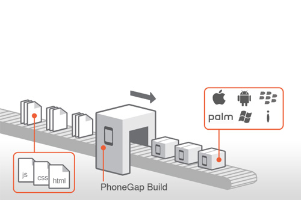

Phonegap
Edgar Cardosa - Mayo 2017
Historia
PhoneGap es un framework para el desarrollo de aplicaciones móviles producido por Nitobi, y comprado posteriormente por Adobe Systems.3 4 Principalmente, PhoneGap permite a los programadores desarrollar aplicaciones para dispositivos móviles utilizando herramientas genéricas tales como JavaScript, HTML5 y CSS3.
Edgar cardosa - Mayo 2017
¿Qué es Phonegap?
PhoneGap maneja API que permiten tener acceso a elementos como el acelerómetro, la cámara, los contactos en el dispositivo, la red, el almacenamiento, las notificaciones, etc. Estas API se conectan al sistema operativo usando el código nativo del sistema huésped a través de una Interfaz de funciones foráneas en Javascript.
PhoneGap permite el desarrollo ya sea ejecutando las aplicaciones en nuestro navegador web, sin tener que utilizar un simulador dedicado a esta tarea, y brinda la posibilidad de soportar funciones sobre frameworks como Sencha Touch o JQuery Mobile.

Edgar cardosa - Mayo 2017
Características
Phonegap permite crear actualmente aplicaciones móviles para: iPhone, Android, Windows Phone, Blackerry, Blackberry 10, webOS, Symbian y Bada
Las APIs que proporciona PhoneGap son:
*Acelerómetro
*Cámara
*Compás
*Contactos
*Sistema de Ficheros
*Geolocalización
*Media
*Red
*Notificaciones (alertas, sonido, vibración)
*Almacenamiento

Edgar cardosa - Mayo 2017